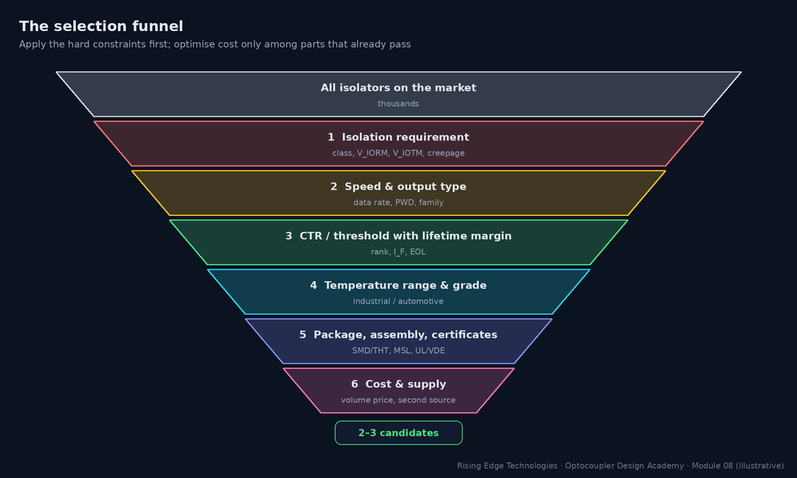
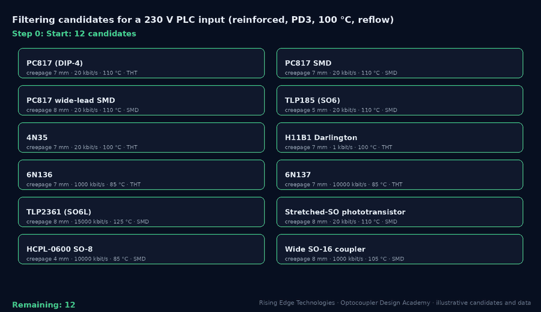
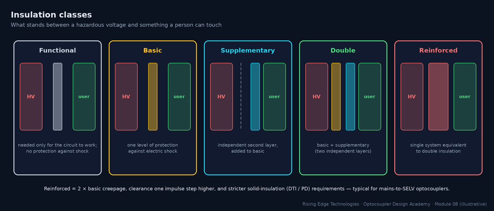
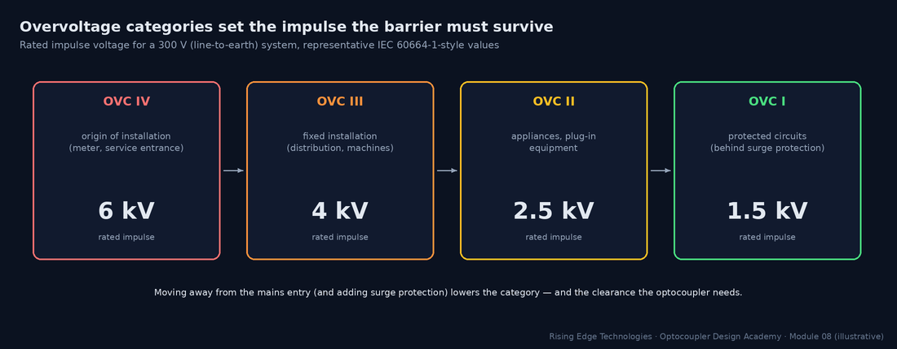
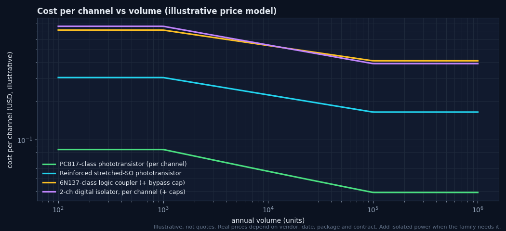

Component Selection Criteria
A systematic selection methodology: derive the isolation requirement from the application, filter by speed and output type, size CTR with lifetime margin, respect temperature and package constraints, and optimize cost across volume scenarios — ending in a reusable selection worksheet.
Illustrations and animations are original teaching drawings, not to scale. Values marked representative are typical of common parts; always confirm against the current datasheet or standard you design to.
Selection goes wrong when it starts from a favourite part or from price. The robust order is: hard safety constraints first, then function, then life, then manufacturing, and only then cost. Each stage removes candidates, so you optimise price among parts that already work.


The isolation requirement is derived from the system, not from the part. Five inputs decide it:

| Input | Where it comes from | What it sets |
|---|---|---|
| Insulation class | Hazard analysis & end-product standard (what is touchable?) | Basic vs reinforced multiplier; DTI/PD requirements |
| Working voltage | Highest rms (for creepage) and peak (for VIORM) across the barrier, incl. DC bus, ripple | Creepage table row; VIORM |
| Overvoltage category | Where the equipment connects to the mains | Rated impulse → clearance, VIOTM |
| Pollution degree | Environment inside the enclosure | Creepage table column |
| Altitude | Installation site (> 2000 m needs correction) | Clearance multiplier (e.g. ≈ 1.14 at 3000 m, 1.29 at 4000 m) |

Speed decides the family before anything else in the datasheet matters. Use the data rate and the timing accuracy you need:
| Requirement | Rule of thumb | Families that fit |
|---|---|---|
| ≤ 1 kHz, status / relay signals | Any | Phototransistor, Darlington, AC-input |
| 1–50 kHz | Phototransistor with RL ≈ 1 kΩ and moderate overdrive (Module 4) | Phototransistor (PC817, 4N35 + RBE) |
| 50 kHz – 1 Mbit/s | Needs photodiode-based detection | 6N135/6N136, logic parts |
| 1–15 Mbit/s | PWD ≤ 10–20 % of bit time; skew budget | 6N137, TLP2361, HCPL-26xx |
| > 15–25 Mbit/s or tight skew | Optocouplers run out of margin | Digital isolators (Module 15) |
| PWM for power stages | Delay matching between channels for dead time | Gate-driver couplers with specified skew |
Worked example — PWM duty accuracy
20 kHz PWM (50 µs period) must keep duty error ≤ 0.5 %.- Allowed PWD = 0.005 × 50 µs = 250 ns.
- A phototransistor (µs-class asymmetry) cannot meet it; a 6N137-class part (PWD ≤ ≈ 35 ns) passes easily.
For CTR-specified families, select the rank from the end-of-life requirement, not the new-part behaviour (Modules 6 and 9):
Worked example — choosing the rank
Circuit needs CTR 25 % at end of life (Module 4 saturation checker). Factors: 0.9 × 0.8 × 0.9 × 0.5 = 0.324. Margin 2.- Required rank minimum = 25 % × 2 / 0.324 ≈ 154 %.
- Rank B (130 %) is not enough; rank C (200 %) passes. Alternatively raise IF (costs life) or halve the needed CTR with a larger pull-up (costs speed).
Module 5 covered each family in depth. In selection terms, the output requirement usually narrows the choice to one or two families:
| Your output needs to… | Choose | Watch |
|---|---|---|
| Drive a logic input | Phototransistor (slow) or logic output (fast) | Pull-up, VCE(sat) vs VIL |
| Carry an analog value accurately | Linear (IL300/HCNR201) or ADC + digital isolator | K3 tolerance, op-amp supplies |
| Be part of a feedback loop | Phototransistor in linear region | CTR spread → loop gain spread; opto pole |
| Switch a small DC/AC load | PhotoMOS SSR | RON, leakage, surge |
| Switch a mains load | TRIAC driver (zero-cross or random-phase) | VDRM, snubber |
| Drive a power switch gate | Gate-driver coupler | Peak current, UVLO, CMTI, DESAT |
| Detect AC presence / zero cross | AC-input coupler | Resistor power and voltage |
Match the part’s rated range to the internal ambient of the enclosure, which is often 15–30 °C above the room:
| Grade | Typical ambient range | Notes |
|---|---|---|
| Commercial | 0 … +70 °C | Rare for optocouplers; most are industrial by default |
| Industrial | −40 … +85 / +100 / +110 °C | Check the upper limit and the derating curves |
| Extended / automotive | −40 … +125 °C | AEC-Q101 (discretes) or AEC-Q100 (IC-based couplers) qualification, PPAP, change notification |
| High-temperature | up to +125 °C and beyond | Gate drivers near power modules; ageing budget becomes dominant |
The selection question is not “is 85 °C inside the rating” but “does the part still meet CTR, leakage and derating at the enclosure’s worst temperature for the full life” (Module 9). A part rated to 110 °C running at 85 °C has far more derating headroom than one rated to 100 °C.
With the isolation requirement known, the package is largely decided by creepage and assembly (Modules 3 and 11):
| Constraint | Implication |
|---|---|
| Creepage ≤ 5 mm | SOP-4/SO6 compact packages are fine |
| Creepage 5–7 mm | Standard DIP or DIP gull-wing |
| Creepage ≥ 8 mm | Wide-lead DIP, stretched SO6/SO8, wide SO16 |
| Reflow-only assembly | SMD options; check MSL and floor life |
| Wave/THT line or harsh vibration | Through-hole DIP |
| Board area critical | SO6/SOP-4; stretched SO for reinforced in small area |
Collect the certifications your end-product standard needs before shortlisting:
| Need | Typical evidence |
|---|---|
| Isolation withstand | UL 1577 file (VISO) |
| Working-voltage / reinforced claim | IEC 60747-5-5 / VDE 0884-5 certificate (VIORM, PD test) |
| Regional acceptance | CQC (China), CSA (Canada) as required |
| End-product standard specifics | e.g. IEC 62368-1, IEC 61010-1, IEC 60601-1 acceptance of the component certificates |
| Automotive | AEC-Q101/Q100, PPAP, change notification |
Only now does price matter. Four cost levers, in order of impact:
Family
A phototransistor is typically an order of magnitude cheaper than a logic coupler or isolator channel; do not buy speed you do not need.
Volume tier
Price per part falls steeply with volume; quote at your real annual quantity.
Channel count
Multi-channel parts and digital isolators amortise cost per channel.
Hidden BOM
Supplies, bypass caps, pull-ups, TVS, board area and test time. An isolated DC-DC can cost more than all the couplers together.

Application A — 24 V PLC digital input (industrial cabinet)
| Step | Decision |
|---|---|
| Isolation | Field side and logic side are both SELV: functional isolation for noise/ground loops (verify with the PLC standard, IEC 61131-2). Creepage per functional needs; standard packages suffice. |
| Speed / output | < 1 kHz, logic input → phototransistor. |
| CTR | IF ≈ 3 mA from the IEC 61131-2 input current window; needed CTR 25 % EOL → rank C (Section 4). |
| Temperature / package | −25…+70 °C cabinet (internal up to 85 °C); SMD SOP-4 or DIP SMD on a reflow line. |
| Result | PC817-class (rank C) SMD or TLP185-class; about 16 channels per module → consider 4-channel packages for area. |
Application B — 230 V flyback feedback (IEC 62368-1, reinforced)
| Step | Decision |
|---|---|
| Isolation | Mains primary to SELV secondary: reinforced; working 250 Vrms, OVC II, PD2 → creepage ≈ 5.0 mm, clearance ≈ 3.0 mm (representative), VIORM ≥ 354 Vpk plus the flyback reflected-voltage peak across the barrier. |
| Speed / output | Linear feedback loop → phototransistor in the active region. |
| CTR | Narrow rank (e.g. B or C) to limit loop-gain spread (Module 4); EOL margin for regulation at CTRmin. |
| Temperature / package | Inside the supply up to 100–105 °C; standard DIP (≈ 7 mm) or wide-lead for margin; VDE-certified option. |
| Result | PC817-class VDE option, rank B, 4-pin DIP/SMD; confirm with the supply’s safety file. |
Application C — isolated RS-485 at 1 Mbit/s in a 400 V drive
| Step | Decision |
|---|---|
| Isolation | Touchable communication port vs 400 V (up to 300 V line-to-earth), OVC III, PD2 inside the enclosure: reinforced → creepage ≈ 6.3–8 mm, clearance ≈ 5.5 mm (6 kV impulse), VIORM ≥ the DC-bus-referenced peak. |
| Speed / output | 1 Mbit/s: PWD ≤ 100 ns and CMTI ≥ 2× drive dV/dt at the port (e.g. ≥ 25–50 kV/µs) → logic coupler or digital isolator. |
| Channels | DI, RO and DE: three channels plus isolated 5 V supply. |
| Result | Three 10–15 MBd logic couplers in stretched SO6 (8 mm) or a 3-channel digital isolator + isolated transceiver; cost comparator usually favours the integrated isolated transceiver at volume (Module 15). |
Work through the funnel for your own interface. The worksheet generates a requirement specification and candidate families, saves your entries in this browser, and prints cleanly for a design review.
Safety first
Derive the isolation requirement from the system before looking at parts.
Five inputs
Insulation class, working voltage, OVC, pollution degree, altitude.
Speed picks the family
Data rate and timing accuracy narrow the choice immediately.
Rank from EOL
Required rank = needed CTR × margin / Πk-factors.
Internal ambient
Select the temperature grade for the hottest point in the enclosure.
Package from creepage
Wide or stretched packages for ≥ 8 mm.
Certificates per option
Match BOM ordering codes to certificate coverage.
Cost last
Compare total cost (supplies, caps, area) at real volume.
Design checklist
Tick items as you review a design. Your ticks are saved in this browser only; use your browser’s print function for a sign-off copy.
Four parts: multiple choice, true/false, a matching exercise and engineering scenarios. Score 80 % on the multiple choice to pass the module.